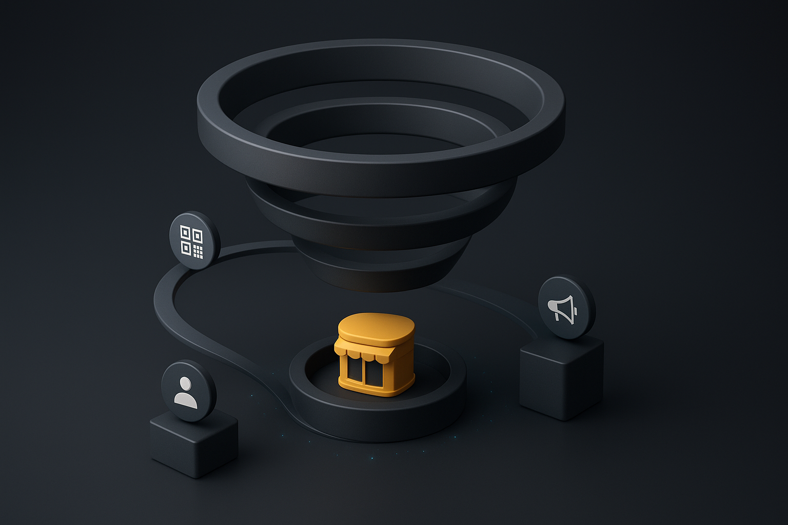

<!DOCTYPE html>
<html lang="en">
<head>
    <meta charset="utf-8" />
    <meta name="viewport" content="width=device-width, initial-scale=1" />
    <title>Are stores becoming media studios faster than brands can adapt? | Signal-Driven Brand Collaborations</title>
    <style>
        :root {
            --bg: #f8f8f2;
            --paper: #ffffff;
            --text: #1b1f2b;
            --muted: #6c7283;
            --accent: #0a4c6a;
            --border: #ebedf5;
            --mono: "IBM Plex Mono", "SFMono-Regular", Consolas, "Liberation Mono", Menlo, monospace;
            --serif: "Source Serif 4", "Spectral", Georgia, "Times New Roman", serif;
            --sans: "Source Sans 3", "Inter", -apple-system, BlinkMacSystemFont, "Segoe UI", Helvetica, Arial, sans-serif;
            --font-base: clamp(1rem, 0.94rem + 0.3vw, 1.15rem);
            --line-base: 1.7;
            --h1: clamp(2.2rem, 1.6rem + 1.2vw, 3rem);
            --h2: clamp(1.4rem, 1.2rem + 0.4vw, 1.65rem);
            --h3: clamp(1.15rem, 1.05rem + 0.2vw, 1.35rem);
        }

        * { box-sizing: border-box; }

        body {
            margin: 0;
            background: var(--bg);
            font-family: var(--sans);
            color: var(--text);
            line-height: var(--line-base);
            font-size: var(--font-base);
        }

        .page {
            max-width: 860px;
            margin: 0 auto;
            padding: 48px 24px 72px;
        }

        header {
            background: var(--paper);
            padding: 48px;
            border-radius: 24px;
            box-shadow: 0 18px 60px rgba(13, 21, 45, 0.08);
            border: 1px solid var(--border);
        }

        h1 {
            font-family: var(--serif);
            font-size: var(--h1);
            margin: 0 0 12px;
            line-height: 1.2;
        }

        h2, h3, h4 {
            font-family: var(--serif);
            margin-top: 48px;
            margin-bottom: 12px;
            line-height: 1.25;
        }

        p {
            margin: 0 0 20px;
            font-size: var(--font-base);
        }

        .subtitle {
            font-size: 1.15rem;
            color: var(--muted);
            margin-bottom: 18px;
        }

        .meta {
            display: flex;
            flex-wrap: wrap;
            gap: 16px 32px;
            margin-top: 24px;
            padding-top: 20px;
            border-top: 1px solid var(--border);
        }

        .meta-item {
            min-width: 160px;
        }

        .meta-label {
            text-transform: uppercase;
            letter-spacing: 0.08em;
            font-size: 0.75rem;
            color: var(--muted);
        }

        .meta-value {
            font-size: 1rem;
            margin-top: 4px;
        }

        .updated {
            margin-top: 32px;
            font-size: 0.9rem;
            color: var(--muted);
        }

        .hero-figure {
            margin: 28px 0 0;
            border-radius: 24px;
            overflow: hidden;
            border: 1px solid var(--border);
            box-shadow: 0 24px 70px rgba(13, 21, 45, 0.09);
            background: #000;
        }

        .hero-figure img {
            width: 100%;
            display: block;
            object-fit: cover;
            max-height: 480px;
        }

        .hero-figure figcaption {
            padding: 16px 28px;
            font-size: 0.95rem;
            color: var(--muted);
            background: var(--paper);
        }

        .hero-meta {
            display: flex;
            flex-wrap: wrap;
            gap: 12px 24px;
            margin-top: 12px;
            font-size: 0.85rem;
            text-transform: uppercase;
            letter-spacing: 0.08em;
            color: var(--muted);
        }

        .hero-meta span strong {
            display: block;
            color: var(--text);
            font-size: 0.95rem;
            letter-spacing: 0;
            text-transform: none;
        }

        .inline-visual {
            margin: 36px 0;
            border: 1px solid var(--border);
            border-radius: 20px;
            overflow: hidden;
            background: var(--paper);
            box-shadow: 0 16px 40px rgba(13, 21, 45, 0.07);
        }

        .inline-visual img {
            width: 100%;
            display: block;
            object-fit: cover;
        }

        .inline-visual figcaption {
            padding: 18px 24px 22px;
        }

        .inline-visual .label {
            font-size: 0.85rem;
            text-transform: uppercase;
            letter-spacing: 0.08em;
            color: var(--muted);
        }

        .inline-visual .description {
            font-size: 1rem;
            margin-top: 6px;
            color: var(--text);
        }

        .inline-visual .metrics {
            margin-top: 14px;
            display: flex;
            flex-wrap: wrap;
            gap: 8px;
        }

        .inline-visual .metrics span {
            font-size: 0.8rem;
            text-transform: uppercase;
            letter-spacing: 0.08em;
            border: 1px solid var(--border);
            padding: 4px 8px;
            border-radius: 999px;
            color: var(--muted);
            background: rgba(10, 76, 106, 0.04);
        }

        .inline-visual .metrics-focus {
            margin-top: 8px;
            font-size: 0.85rem;
            color: var(--muted);
        }

        main {
            margin-top: 42px;
            background: var(--paper);
            padding: 48px;
            border-radius: 24px;
            border: 1px solid var(--border);
            box-shadow: 0 24px 70px rgba(13, 21, 45, 0.07);
        }

        main h2 {
            font-size: var(--h2);
            border-bottom: 1px solid var(--border);
            padding-bottom: 12px;
        }

        blockquote {
            border-left: 4px solid var(--accent);
            padding-left: 18px;
            margin: 24px 0;
            color: var(--accent);
            font-style: italic;
            background: rgba(10, 76, 106, 0.04);
        }

        code, pre {
            font-family: var(--mono);
            background: #f3f5fa;
            border: 1px solid var(--border);
            border-radius: 8px;
        }

        pre {
            padding: 18px;
            overflow-x: auto;
        }

        table {
            width: 100%;
            border-collapse: collapse;
            margin: 32px 0;
        }

        th, td {
            border: 1px solid var(--border);
            padding: 12px;
            text-align: left;
            font-size: 0.95rem;
        }

        th {
            background: rgba(10, 76, 106, 0.06);
            font-weight: 600;
        }

        ul, ol {
            margin: 0 0 24px 20px;
        }

        a {
            color: var(--accent);
            text-decoration: none;
            border-bottom: 1px solid rgba(10, 76, 106, 0.2);
        }

        a:hover {
            border-bottom-color: var(--accent);
        }

        .image-gallery {
            margin-top: 52px;
        }

        .image-gallery h3 {
            font-family: var(--serif);
            font-size: 1.15rem;
            margin-bottom: 18px;
            color: var(--heading);
        }

        .image-grid {
            display: grid;
            grid-template-columns: repeat(auto-fit, minmax(220px, 1fr));
            gap: 24px;
        }

        .image-grid figure {
            background: var(--paper);
            border: 1px solid var(--border);
            border-radius: 18px;
            overflow: hidden;
            box-shadow: 0 14px 38px rgba(13, 21, 45, 0.08);
        }

        .image-grid img {
            width: 100%;
            display: block;
            object-fit: cover;
            height: 200px;
        }

        .image-grid figcaption {
            padding: 14px 18px 18px;
        }

        .image-grid .label {
            font-size: 0.85rem;
            text-transform: uppercase;
            letter-spacing: 0.08em;
            color: var(--muted);
        }

        .image-grid .description {
            font-size: 0.95rem;
            margin-top: 6px;
            color: var(--text);
        }

        @media (max-width: 640px) {
            .page {
                padding: 32px 16px;
            }

            header, main {
                padding: 32px 20px;
            }

            h1 {
                font-size: 1.8rem;
            }

            .meta {
                flex-direction: column;
            }

            .hero-figure figcaption {
                padding: 12px 18px;
            }
        }
    </style>
</head>
<body>
    <div class="page">
        <header>
            <div class="tagline">Signal-Driven Brand Collaborations</div>
            <h1>Are stores becoming media studios faster than brands can adapt?</h1>
            <div class="subtitle">Are stores becoming media studios faster than brands can adapt?</div>
            <div class="meta">
                
                    <div class="meta-item">
                        <div class="meta-label">Window</div>
                        <div class="meta-value">2025-11-18 → 2025-12-02</div>
                    </div>
                
                    <div class="meta-item">
                        <div class="meta-label">Read time</div>
                        <div class="meta-value">~21 min read</div>
                    </div>
                
                    <div class="meta-item">
                        <div class="meta-label">Confidence</div>
                        <div class="meta-value">Directional</div>
                    </div>
                
                    <div class="meta-item">
                        <div class="meta-label">Region</div>
                        <div class="meta-value">US</div>
                    </div>
                
            </div>
            
            <div class="updated">Updated Dec 02, 2025</div>
            
        </header>
        
        <figure class="hero-figure">
            
            <figcaption>Choose activating store-as-studio media now to protect margin during Nov 18–Dec 02 versus defaulting to deeper holiday markdowns. Approving a short creator slot schedule and pricing a sellable in-store ad unit on printed CPM sheets Precise, decisive, collaborative</figcaption>
        </figure>
        
        <div class="hero-meta">
            
            <span>Window <strong>2025-11-18 → 2025-12-02</strong></span>
            
            <span>Read <strong>~21 min read</strong></span>
            
            <span>Confidence <strong>Directional</strong></span>
            
        </div>
        
        
        <main>
            <h1 id="are-stores-becoming-media-studios-faster-than-brands-can-adapt">Are stores becoming media studios faster than brands can adapt?</h1>
<p><em>Query</em>: Are stores becoming media studios faster than brands can adapt?</p>
<h3 id="fast-stack">Fast Stack</h3>
<ul>
<li><strong>Headline:</strong> Use store-produced media and creator activations to capture early-window buyers and protect margin; favor short, sellable in-store ad units over blanket markdowns.</li>
<li><strong>Why now:</strong> The Nov 18 1 Dec 02, 2025 window precedes heavy holiday discounting and is the last opportunity to shift buyer share into full-price behavior.</li>
<li><strong>Next 30 days:</strong> Mandate: Stores + Marketing + Partnerships + Analytics must launch pilot creator slots in target stores, deploy QR attribution, and report the unified metrics; owner: Head of Retail with Analytics support.</li>
</ul>
<h2 id="fast-path">Fast Path</h2>
<h3 id="executive-take">Executive Take</h3>
<p>You need more full-price, experience-driven buyers from Nov 18 - Dec 02, 2025 without deepening holiday discounting. Treating stores as media studios can move footfall and buyer mix so you hit a <strong>10-15%</strong> base foot-traffic uplift (stretch <strong>≥25%</strong>) and shift early-window share from the current 12-15% toward <strong>20-30%</strong>, while holding event CPA at or below <strong>≤0.80×</strong> baseline and QR redemption at <strong>≥5% of footfall</strong> <sup id="fnref:2"><a class="footnote-ref" href="#fn:2">2</a></sup><sup id="fnref:8"><a class="footnote-ref" href="#fn:8">8</a></sup>. Favor a store-as-studio / media-led holiday approach: in the next 30 days align Stores, Marketing, Partnerships, and Analytics to price and sell short creator slots, deploy QR attribution, and instrument per-visit media revenue so you can compare incremental gross margin vs markdown cost. Measure success by the four unified metrics (foot-traffic uplift, early-window share, event CPA, QR redemption) and stop broad markdowns that exceed the markdown cost-per-buyer baseline <sup id="fnref2:2"><a class="footnote-ref" href="#fn:2">2</a></sup><sup id="fnref:3"><a class="footnote-ref" href="#fn:3">3</a></sup>.</p>
<h3 id="highlights">Highlights</h3>
<ul>
<li>Treat store attention as priced inventory: short creator slots and modular ad units convert attention into margin faster than blanket discounts <sup id="fnref16:2"><a class="footnote-ref" href="#fn:2">2</a></sup>.</li>
<li>Creator-led activations raise AOV and retention when paired with product-focused offers and local inventory control; creators seed early-window demand <sup id="fnref4:3"><a class="footnote-ref" href="#fn:3">3</a></sup><sup id="fnref16:8"><a class="footnote-ref" href="#fn:8">8</a></sup>.</li>
<li>Instrumentation matters: compare per-visit media revenue to markdown cost-per-buyer and track event CPA to ensure media substitutes for, not supplements, discounting <sup id="fnref17:2"><a class="footnote-ref" href="#fn:2">2</a></sup>.</li>
</ul>
<h3 id="top-operator-moves">Top Operator Moves</h3>
<ul>
<li>Price and offer a 20–60 minute creator headliner as a sellable in-store ad unit in 10–25 pilot stores and require a QR-driven call to action that maps to POS.</li>
<li>Reallocate a share of planned promo spend to local creator fees and paid in-store CPMs, instrument per-visit media revenue and compare incremental gross margin vs markdown baseline within two weeks of each event.</li>
<li>Set Analytics to report daily: foot-traffic uplift, early-window buyer share, event CPA vs baseline, and QR redemption as a percentage of footfall; pause formats that miss CPA or QR floors.</li>
</ul>
<h3 id="plays">Plays</h3>
<ul>
<li><strong>Store-as-studio early-window push</strong> — Achieve <strong>10-15%</strong> foot-traffic uplift (stretch <strong>≥25%</strong>) and raise early-window share toward <strong>20-30%</strong> while keeping event CPA at or below <strong>≤0.80×</strong> baseline and QR redemption at <strong>≥5% of footfall</strong>.</li>
</ul>
<hr>
<h2 id="for-operators-and-collab-leads">For operators and collab leads</h2>
<p><em>Spine:</em> What: Sell attention to protect margin when product costs rise | Proof: Raise full-price early-window buyer share to 20–30% while holding promo depth and event CPA ≤0.8× baseline, measured by paired tracking of buyer-share vs promo-intensity during Nov 18–Dec 02. | Move: Test assumptions: foot traffic volume, conversion, and media scale</p>
<h2 id="signal-map">Signal Map</h2>
<figure class="inline-visual"><figcaption><div class="label">Signal Map</div><div class="description">Concentric rings (street, storefront, in-store attention, checkout) with a vertical measurement spine down the center. Overlaid lattice of creator nodes and brand ad tokens. Embedded percentage anchors on rings.</div><div class="metrics"><span>Foot-traffic uplift</span><span>QR redemption</span><span>Event CPA</span></div><div class="metrics-focus">Focus: Foot-traffic uplift · QR redemption · Event CPA</div></figcaption></figure>

<h2 id="measurement-spine">Measurement Spine</h2>
<h3 id="anchors">Anchors</h3>
<ul>
<li><strong>Early-window full-price buyer share:</strong> Increase full-price transactions attributed to store events to 20-30% of total transactions during Nov 18Dec 02. (Retail Analytics)</li>
<li><strong>Promo intensity (weighted discount depth and share of discounted transactions) guardrail:</strong> No increase versus baseline in weighted average discount depth or share of transactions with any discount during the window. (Pricing / Revenue Management)</li>
<li><strong>Event CPA relative to baseline:</strong> Campaign-level event CPA must be 8% of baseline or lower (&lt;=0.8x baseline). (Head of Partnerships)</li>
<li><strong>Foot traffic uplift:</strong> Lift foot traffic 10-15% base with stretch to &gt;=25% for high-performing locations. (Retail Analytics)</li>
<li><strong>QR redemption rate of footfall guardrail:</strong> Achieve at least 5% of footfall redeeming QR links; 15% redemption preferred for mini-burst economics. (Retail Analytics)</li>
</ul>
<h3 id="measurement-plan">Measurement Plan</h3>
<ul>
<li><strong>Early-Window Full-Price Buyer Share</strong> (Retail Analytics, Nov 18–Dec 02, 2025 + 14-day attribution window) — Full-price transactions attributed to store events / total transactions during Nov 18–Dec 02. Attribution via event tags, POS source code, or unique QR scan linkbacks.
  Why it matters: Direct test of the job story: increases in this share mean more experience-driven buyers, not deeper discounts.</li>
<li><strong>Promo Intensity (Paired Metric)</strong> (Pricing / Revenue Management, Daily during Nov 18–Dec 02, 2025) — Weighted average discount depth across promoted SKUs and share of transactions with any discount, measured daily and aggregated for the window.
  Why it matters: Paired with M1 to prove buyer-share growth occurred without increasing promo depth or frequency.</li>
<li><strong>Event Cpa (Relative To Baseline)</strong> (Marketing Finance / Partnerships, Event window + 30 days for LTV follow-up) — Total event spend (creator fees + on-site ops + media) / full-price buyers attributed to the event. Report as x baseline CPA where baseline = average CPA for last pre-holiday period (owner to define baseline window).
  Why it matters: Ensures store-as-studio acquisition stays cost-efficient. Target ceiling ≤0.8× baseline CPA.</li>
<li><strong>Qr Redemption Rate (Attention -&gt; Action)</strong> (Store Ops / Digital, Daily during Nov 18–Dec 02, 2025) — Unique QR redemptions linked to event or store media / measured store footfall, daily and aggregated for the window.
  Why it matters: Checks that media-driven attention converts into measurable buyer signals. Target floor ≥5% of footfall.
  Note: Buyer activity share in the early window is tracked separately from SKU promo share to protect margin while growing participation.</li>
</ul>
<h2 id="deep-analysis">Deep Analysis</h2>
<h3 id="in-store-media-can-be-a-direct-margin-lever-sell-attention-to-protect-margin-when-product-costs-rise">In-store media can be a direct margin lever: Sell attention to protect margin when product costs rise</h3>
<p>Wholesale and tariff-driven cost pressure is squeezing low-margin categories, leaving little room for holiday markdowns <sup id="fnref3:2"><a class="footnote-ref" href="#fn:2">2</a></sup>. In-store media and brand experiences create sellable attention and direct revenue per visit, converting attention into margin instead of deeper discounts <sup id="fnref4:2"><a class="footnote-ref" href="#fn:2">2</a></sup><sup id="fnref2:8"><a class="footnote-ref" href="#fn:8">8</a></sup>. Shifting spend from blanket markdowns to in-store media raises per-visit margin when measured against markdown cost-per-buyer, but it requires operational inventory of attention and a measurable media product.
<em>Operator note:</em> Treat store attention as an inventory you can price. Prioritize simple, sellable in-store ad units and short creator slots that convert purchases or affiliate media revenue. Do not assume media covers all lost margin; focus on high-frequency SKUs and adjacent media revenue first.
<em>Instrument next:</em> Instrument per-visit media revenue, incremental gross margin lift versus markdown baseline, and media CPM relative to local digital ad CPM.</p>
<h3 id="creator-and-community-activations-lift-aov-and-loyalty-creators-bring-attention-that-converts-into-higher-aov-and-retention">Creator and community activations lift AOV and loyalty: Creators bring attention that converts into higher AOV and retention</h3>
<p>Brands that target Gen Z creatives use curated creator-led events and storytelling to convert attention into purchase intent and higher average order value <sup id="fnref2:3"><a class="footnote-ref" href="#fn:3">3</a></sup><sup id="fnref3:8"><a class="footnote-ref" href="#fn:8">8</a></sup>. Local operators and smaller brands show that community-driven programming can scale local reach without large national ad budgets, creating efficient, high-intent foot traffic <sup id="fnref:7"><a class="footnote-ref" href="#fn:7">7</a></sup>. Compared with straightforward discounts, creator activations typically produce fewer but higher-value buyers and stronger repeat behavior if events include exclusive SKUs and follow-up offers.
<em>Operator note:</em> Book creators who map to product use and local community. Design events with clear product moments and post-event follow-up (email or QR gated offers). Price limited SKUs above baseline to measure premium capture.
<em>Instrument next:</em> Instrument event-level metrics: event CPA, QR redemption rate, AOV and full-price share versus matched non-event days, and 30-day repeat rate for attendees.</p>
<h3 id="early-window-buyers-are-reachable-before-deep-discounting-capture-nov-18dec-02-buyers-before-black-friday-discount-madness">Early-window buyers are reachable before deep discounting: Capture Nov 18–Dec 02 buyers before Black Friday discount madness</h3>
<p>Holiday discounting peaks around Black Friday and Cyber Monday, compressing purchase timing and pushing full-price buyers into discounts <sup id="fnref:5"><a class="footnote-ref" href="#fn:5">5</a></sup><sup id="fnref:6"><a class="footnote-ref" href="#fn:6">6</a></sup>. The pre-peak window is a scarce opportunity to shift buyer share toward full-price sales by offering experiences, exclusives, or creator events that reward early purchase <sup id="fnref4:8"><a class="footnote-ref" href="#fn:8">8</a></sup>. Compared with discount-heavy tactics, experience-led activations trade lower raw foot traffic for higher full-price conversion and longer-term loyalty if you own the content and timing.
<em>Operator note:</em> Own the early window with time-limited experiences and limited-run SKUs. Schedule 2-week creator activations and exclusive product drops starting Nov 18. Keep promos off these SKUs and reserve a portion of inventory for event-day buyers.
<em>Instrument next:</em> Instrument early-window full-price transaction share, foot-traffic uplift for event days versus baseline, and QR redemption as percent of footfall during Nov 18–Dec 02.</p>
<h3 id="what-breaks-and-what-must-be-proved-in-switching-from-promos-to-media-test-assumptions-foot-traffic-volume-conversion-and-media-scale">What breaks and what must be proved in switching from promos to media: Test assumptions: foot traffic volume, conversion, and media scale</h3>
<p>Discounts reliably drive volume; media and creator strategies reliably lift margin and buyer quality but not always raw foot traffic <sup id="fnref2:5"><a class="footnote-ref" href="#fn:5">5</a></sup><sup id="fnref5:2"><a class="footnote-ref" href="#fn:2">2</a></sup>. The switch breaks if in-store content does not scale attention or if event CPA exceeds markdown cost per buyer; it holds when media monetization or higher AOV offsets lost volume and when QR-driven measurement ties content to purchase <sup id="fnref6:2"><a class="footnote-ref" href="#fn:2">2</a></sup><sup id="fnref5:8"><a class="footnote-ref" href="#fn:8">8</a></sup>. Comparative tests across matched stores reveal the margin crossover point where media-led activations outperform discount-led traffic economically.
<em>Operator note:</em> Run a controlled rollout: matched-store cohorts running discount-heavy, media-led, and hybrid approaches. Keep inventory, staffing, and weekday/weekend timing constant. Be ready to dial promos back in if event CPA breaches markdown alternative.
<em>Instrument next:</em> Instrument matched-store cohort tests tracking foot-traffic lift, full-price buyer share, event CPA versus markdown cost-per-acquisition, media revenue per visit, and buyer activity share versus promo intensity.</p>
<h2 id="pattern-matches">Pattern Matches</h2>
<ul>
<li><strong>Event-as-customer-acquisition</strong>
  Then: Industry conferences like China Consumer 2025 concentrated buyer attention and gave brands a single high-value moment to convert prospects.
  Now: Retailers run frequent in-store launch nights and micro-events to produce shareable content and drive immediate purchases.
  Operator leap: Run three 90-minute in-store launches across top-performing stores between Nov 18 and Nov 25, promote each with one social clip and a QR offer, and measure event CPA and QR redemption versus baseline weekend traffic.</li>
<li><strong>In-store media as margin defense</strong>
  Then: QSR chains used in-store digital media to protect margins when wholesale and tariff pressures rose.
  Now: Retailers can use curated in-store content loops to steer buyers to full-price bundles instead of markdowns during holiday cost pressure.
  Operator leap: A/B test a 30-second in-store video promoting a full-price holiday bundle versus standard shelf signage in 10 matched stores for 7 days and track buyer activity share and average order value.</li>
<li><strong>Hire-for-voice turned into store creators</strong>
  Then: Brands like Nothing hired Gen Z creative leads to recalibrate brand voice and reach younger audiences.
  Now: Retailers and brands can scale that idea by turning store staff and local creators into repeatable content producers and event hosts.
  Operator leap: Book two creator-hosted sessions in five high-footfall stores, film short verticals on-site, run the content for 10 days, and compare event CPA and early-window full-price purchases to control stores.</li>
<li><strong>Studio tech shortens production lag</strong>
  Then: Film studios adopted cloud workflows to reduce production cycles and ship work faster.
  Now: Retailers can deploy lightweight cloud editing templates to turn store-shot footage into publishable ads within 48 hours.
  Operator leap: Pilot a 48-hour capture-to-publish pipeline in six stores: capture 3 clips per day, edit with templates, publish to paid and organic channels, and measure lift in early-window share and conversion within 72 hours of publish.</li>
<li><strong>Local content outperforms big-budget reach</strong>
  Then: Local businesses without NYC-size budgets succeeded online by leaning on community relevance.
  Now: Neighborhood-focused store content can draw earlier full-price buyers better than generic national holiday creative.
  Operator leap: Create neighborhood-specific creatives for 10 stores with localized CTAs and offers, run them native to local channels for two weeks, and compare foot traffic uplift and QR redemption to national creative.</li>
<li><strong>Experience add-ons beat shallow discounts</strong>
  Then: Black Friday and Cyber Monday discount waves compress margins and move price-sensitive buyers into late windows.
  Now: Experience-driven add-ons produced in-store can capture early-window buyers at full price while avoiding a price race.
  Operator leap: Test an experience add-on (on-site personalization or creator meet-and-greet) sold at full price versus a 20 percent markdown in matched stores during Nov 18 to Dec 2 and track early-window share, CPA, and discount dollars.</li>
</ul>
<h2 id="brand-operator-outcomes">Brand &amp; Operator Outcomes</h2>
<ul>
<li><strong>Shift 20% of demand into the early window without deeper discounting</strong> (Retail ops + Partnerships + CRM · Nov 18 - Dec 02, 2025): Run creator-led, in-store experience days from Nov 18 to Dec 2 that package full-price bundles and timed access. Use short-form store content and paid in-store media to drive awareness, then capture visitors with QR-gated add-ons that are full-price or value-packed rather than coupon-based. Sequence offers so promotional depth stays for the later window while experiences pull advance purchases<sup id="fnref13:8"><a class="footnote-ref" href="#fn:8">8</a></sup><sup id="fnref13:2"><a class="footnote-ref" href="#fn:2">2</a></sup><sup id="fnref4:5"><a class="footnote-ref" href="#fn:5">5</a></sup>. (Impact: Increase early_window_share to 20%–30%; foot_traffic_uplift 10%–15%; protect incremental margin vs deeper early discounts; event CPA &lt;= 0.8x baseline.)</li>
<li><strong>Turn priority stores into measurable content studios</strong> (Retail ops + Creative + Analytics · next 90 days to test; scale into holiday 2025): Deploy a lean store-production kit and a two-week content calendar in top 10% stores. Produce 15–30 second clips and live sessions that highlight in-store experiences and full-price offers. Route content to paid local feeds and in-store screens to amplify reach and measure conversion by store-level uplift and QR scans<sup id="fnref14:8"><a class="footnote-ref" href="#fn:8">8</a></sup><sup id="fnref14:2"><a class="footnote-ref" href="#fn:2">2</a></sup><sup id="fnref4:7"><a class="footnote-ref" href="#fn:7">7</a></sup>. (Impact: Foot-traffic uplift stretch to &gt;=25% in treated stores; measurable incremental sales per store; paired metric: buyer activity share vs promo intensity.)</li>
<li><strong>Use QR-anchored experience offers to protect price integrity</strong> (CRM + Retail ops · pilot in next 30 days; activate for Nov 18 - Dec 02): Replace blanket early discounts with QR-first experiential offers: priority shopping slots, gift-wrapping, or on-site demos unlocked by scanning. Track QR redemption as the conversion signal and limit paper coupons. This converts footfall into loyalty and first-party data while avoiding headline price cuts<sup id="fnref15:8"><a class="footnote-ref" href="#fn:8">8</a></sup><sup id="fnref5:5"><a class="footnote-ref" href="#fn:5">5</a></sup><sup id="fnref3:6"><a class="footnote-ref" href="#fn:6">6</a></sup>. (Impact: QR_redemption &gt;= 5% of footfall; event CPA &lt;= 0.8x baseline; higher loyalty lift vs discount-driven buyers.)</li>
<li><strong>Throttle early discounting and reallocate spend to in-store reach</strong> (Pricing + Marketing + Finance · next 90 days to set new promo rules; enforce through holiday 2025): Cap early-window markdowns and redeploy the budget to paid in-store media and creator amplification. Use store media to monetize attention and offset margin pressure from supply costs, rather than widening coupons. Monitor promo depth by store and pause deeper discounts where experience-driven buys are rising<sup id="fnref15:2"><a class="footnote-ref" href="#fn:2">2</a></sup><sup id="fnref6:5"><a class="footnote-ref" href="#fn:5">5</a></sup><sup id="fnref4:6"><a class="footnote-ref" href="#fn:6">6</a></sup>. (Impact: Protect incremental margin; reduce overall promo depth in early window; maintain ability to deploy deeper, targeted discounts later if needed.)</li>
</ul>
<h2 id="activation-kit">Activation Kit</h2>
<h3 id="sell-attention-not-markdowns">Sell attention, not markdowns</h3>
<figure class="inline-visual"><figcaption><div class="label">Case Study 1</div><div class="description">Back-of-store ops desk where a Store Operations Lead configures sellable in-store ad units and a four-hour creator slot.</div><div class="metrics"><span>Conversion rate</span><span>Partner value</span></div><div class="metrics-focus">Focus: Conversion rate · Partner value</div></figcaption></figure>
<p><em>Pillar:</em> Retail &amp; Hospitality Activation · <em>Persona:</em> Head of Retail Operations / Head of Partnerships · <em>Time horizon:</em> immediate
<strong>Why now:</strong> Tariff and cost pressure is compressing margin; converting attention to media revenue offsets markdowns this season.
<strong>Thresholds:</strong> Target mini-burst economics: campaign CPA ≤ 0.8× baseline and redemption ≥ 15%; media CPM should be competitive with local digital CPM and lift incremental margin versus markdown baseline.
<strong>Fit:</strong> Best for Stores with digital/endcap inventory and measurable foot traffic; Not for Locations without screens or reliable door counts.
Proof: In-store media packages convert visit attention into per-visit revenue that protects margin versus blanket markdowns.
Placement options: Checkout-area digital screens, Endcap ad panels adjacent to high-frequency SKUs, Queue and POS banner placements
Target map:
  - Head of Retail Ops (Retailer): Need to protect margin under rising product costs
  - Partnerships Lead (Brand): Wants measurable retail media and immediate visibility
  - Commercial Finance (Finance): Needs revenue uplift that offsets markdown spend
Cadence:
  - Day 0: Media pilot kickoff — Align stores, inventory, thresholds, and measurement approach for a 2-week pilot. (CTA: Send 1-page runbook to merchandising, store ops, and finance)
  - Day 3: Creative + measurement reconfirm — Confirm ad assets, CPM pricing, POS codes, and tagging to ensure attribution. (CTA: Book 30-minute readout with finance and ops to review guardrails)
  - Day 14: Pilot wrap and decision — Share pilot results versus CPA and incremental margin thresholds and agree next steps. (CTA: Deliver scale/kill decision memo to executive sponsor)
Ops tags: owner Head of Retail Ops x Brand Partnerships Lead | Collab type brand↔operator | Zero new SKUs: Yes | Ops drag: medium</p>
<h3 id="use-creators-to-lift-aov-and-repeat">Use creators to lift AOV and repeat</h3>

<p><em>Pillar:</em> Studio Collaboration · <em>Persona:</em> CMO / Head of Experiential · <em>Time horizon:</em> 6-week
<strong>Why now:</strong> Creators drive attention and higher AOV during holiday windows; short bursts reduce calendar risk and test conversion.
<strong>Thresholds:</strong> Treat as a mini-burst: event CPA should be ≤ 0.8× baseline with redemption ≥ 15% and maintain or improve 90-day repeat versus baseline.
<strong>Fit:</strong> Best for Brands targeting Gen Z / stores with flexible event space and CRM reach; Not for Large format rollouts without staff bandwidth or CRM lists.
Proof: Curated creator sessions increase immediate AOV and boost short-term retention when paired with targeted CRM invites.
Placement options: In-store creator sessions at fixture or demo counter, Evening community pop-ups in store with limited-capacity RSVP, Short creator demos embedded in checkout flow (5–10 minute slots)
Target map:
  - Head of Marketing (Brand): Needs high-converting creative channels ahead of peak season
  - Store Manager / Events Lead (Retailer): Wants footfall and AOV lifts with limited operational disruption
  - Retention Manager (Analytics): Track 90-day repeat after event cohorts
Cadence:
  - Day 0: Event brief and target metrics — Agree creator scope, stores, CPA and redemption thresholds, and measurement plan. (CTA: Send 1-page runbook to merchandising, store ops, and finance)
  - Day 7: Logistics and invite check — Finalize floorplan, staff roles, CRM invites, and POS redemption setup. (CTA: Book 30-minute readout with finance and ops to review guardrails)
  - Day 21: Post-event measurement — Deliver cohort-level conversion, AOV lift, redemption and 90-day repeat readout. (CTA: Deliver scale/kill decision memo to executive sponsor)
Ops tags: owner Head of Experiential x Brand Marketing / Creator Agency | Collab type brand↔operator | Zero new SKUs: Yes | Ops drag: high</p>
<h3 id="protect-margin-with-time-limited-bundles">Protect margin with time-limited bundles</h3>

<p><em>Pillar:</em> Retail &amp; Hospitality Activation · <em>Persona:</em> CFO / Head of Merch · <em>Time horizon:</em> pilot
<strong>Why now:</strong> When baseline markdowns erode margin, staged discounts tied to media or event exposure can drive conversion without a permanent price cut.
<strong>Thresholds:</strong> Staged discount must preserve margin per order within 100 basis points of baseline and maintain 90-day repeat at or above baseline; redemption should clear minimum pilot economics.
<strong>Fit:</strong> Best for High-frequency SKUs with thin margins and existing POS bundling capability; Not for Categories with abundant inventory-driven discounting or heavy seasonality risk.
Proof: Bundling media exposure or creator events with staged discounts converts attention while limiting margin erosion versus blanket markdowns.
Placement options: POS-limited bundle offers (buy X get Y at discount), QR-triggered time-limited discount linked to in-store media or event RSVP
Target map:
  - Head of Merch (Retailer): Need tactical offers that limit margin erosion
  - CFO (Finance): Wants controlled experiments that protect gross margin
  - Commercial Lead (Brand): Seeks conversion lift without long-term price risk
Cadence:
  - Day 0: Pilot terms and margin guardrails — Agree bundle structure, margin floor, and stores for the staged discount pilot. (CTA: Send 1-page runbook to merchandising, store ops, and finance)
  - Day 3: Instrumentation and POS setup — Confirm promo codes, POS configuration, and tracking for incremental margin attribution. (CTA: Book 30-minute readout with finance and ops to review guardrails)
  - Day 14: Pilot review and go/no-go — Compare margin per order and 90-day cohort projection against thresholds and decide scale. (CTA: Deliver scale/kill decision memo to executive sponsor)
Ops tags: owner Head of Merch / Pricing x Brand Pricing Lead | Collab type brand↔operator | Zero new SKUs: Yes | Ops drag: medium</p>
<p><em>The Brand Collab Lab turns these plays into named concepts, deck spines, and outreach ready for partner teams.</em></p>
<h2 id="risk-radar">Risk Radar</h2>
<ul>
<li><strong>Risk: baseline mismatch creates false uplift</strong> (Severity 3, Likelihood 2)
  Trigger: Non-random allocation or post-allocation churn changes customer mix in test units
  Detection: Pre-period KPI divergence, differing visit frequency, basket size or customer segments between test and control
  Mitigation: Randomize at the decision unit and stratify on key pre-period metrics; hold a seeded pure holdout for validation</li>
<li><strong>Risk: media shifts demand timing and reduces markdown ROI</strong> (Severity 2, Likelihood 2)
  Trigger: Deploying sellable attention against SKUs that depend on promotional urgency
  Detection: Rising AOV with falling promo redemptions; lower sell-through on promoted inventory during campaign windows
  Mitigation: Target media to high-frequency, full-price SKUs; A/B test media versus markdown on comparable stores before scale</li>
<li><strong>Risk: high engagement without durable conversion</strong> (Severity 2, Likelihood 3)
  Trigger: Selecting creators for reach or style rather than conversion fit and call-to-action
  Detection: High impressions and engagement, low promo code usage, weak same- and 30-day conversion and repeat rates
  Mitigation: Require conversion-linked mechanics such as unique codes or affiliate links; run short randomized trials and measure 0–30 day LTV</li>
<li><strong>Risk: loss of deterministic attribution inflates uncertainty in lift estimates</strong> (Severity 3, Likelihood 3)
  Trigger: Third-party signal loss, poor CRM onboarding, or gaps between POS and digital receipts
  Detection: Rising share of un-attributed sales, lower match rates, and divergent digital vs POS lift estimates
  Mitigation: Instrument first-party identifiers and deterministic matching; prioritize incrementality tests that do not rely on full attribution</li>
</ul>
<h2 id="future-outlook">Future Outlook</h2>

<ul>
<li><strong>6-month</strong> Convert markdown dollars into per-visit media margin: If true, we will see measurable per-visit media revenue and reduced markdown depth on targeted SKUs within 6 months (confidence 0.70)
  Shifting spend from blanket holiday markdowns to short in-store media units creates a new per-visit revenue stream that can be priced against lost markdown margin <sup id="fnref9:2"><a class="footnote-ref" href="#fn:2">2</a></sup>. Early pilots that sell simple attention units and creator slots against high-frequency SKUs raise incremental gross margin versus a markdown baseline within a single season when instrumented correctly <sup id="fnref10:2"><a class="footnote-ref" href="#fn:2">2</a></sup><sup id="fnref9:8"><a class="footnote-ref" href="#fn:8">8</a></sup>. This requires simple sellable inventory, local CPM discipline, and tracking of media revenue per buyer before scaling <sup id="fnref10:8"><a class="footnote-ref" href="#fn:8">8</a></sup>.
  Watch incremental gross margin per visit versus markdown baseline for Cover a meaningful share of planned holiday markdown dollars with media revenue while keeping full-price volume on high-frequency SKUs</li>
<li><strong>12-month</strong> Creators and store media raise full-price share and retention: If true, we will see higher share of full-price sales and sustained AOV lift within 12 months (confidence 0.60)
  Combining creator-led activations with a repeatable in-store media product moves attention into purchase and loyalty rather than deeper discounting <sup id="fnref11:2"><a class="footnote-ref" href="#fn:2">2</a></sup>. Brands that treat stores as studios and price attention increase AOV and repeat rates among cohorts exposed to creator events and media, reducing the need for frequent promotions <sup id="fnref12:2"><a class="footnote-ref" href="#fn:2">2</a></sup><sup id="fnref11:8"><a class="footnote-ref" href="#fn:8">8</a></sup>. Scaling this requires standard units, local sales bundles, and cohort-level LTV tracking to prove promo reduction without sacrificing traffic <sup id="fnref12:8"><a class="footnote-ref" href="#fn:8">8</a></sup>.
  Watch share of full-price sales among customers exposed to media/creator activations for Sustained AOV and repeat rate lift across cohorts, enabling lower promo cadence and higher lifetime value</li>
</ul>
<h2 id="sources">Sources</h2>
<h2 id="appendix-signals">Appendix Signals</h2>
<ul>
<li>China Consumer 2025 Conference: held for later window (strength 0.00) </li>
<li>General Filmmaker Digital Asset Management: held for later window (strength 0.00) </li>
<li>Non-native Plant Adaptation: held for later window (strength 0.00) </li>
<li>Stores Acting As Owned Media Channels: held for later window (strength 0.82) <sup id="fnref7:2"><a class="footnote-ref" href="#fn:2">2</a></sup><sup id="fnref6:8"><a class="footnote-ref" href="#fn:8">8</a></sup><sup id="fnref:4"><a class="footnote-ref" href="#fn:4">4</a></sup></li>
<li>Discount-Heavy Holiday Makes Experience Sales Higher-Value: held for later window (strength 0.80) <sup id="fnref3:5"><a class="footnote-ref" href="#fn:5">5</a></sup><sup id="fnref2:6"><a class="footnote-ref" href="#fn:6">6</a></sup><sup id="fnref8:2"><a class="footnote-ref" href="#fn:2">2</a></sup></li>
<li>Cloud Production Cuts Store Content Friction: held for later window (strength 0.79) <sup id="fnref2:4"><a class="footnote-ref" href="#fn:4">4</a></sup></li>
<li>Gen Z Creative Demand Elevates In-Store Creator Collabs: held for later window (strength 0.78) <sup id="fnref3:3"><a class="footnote-ref" href="#fn:3">3</a></sup><sup id="fnref7:8"><a class="footnote-ref" href="#fn:8">8</a></sup><sup id="fnref2:7"><a class="footnote-ref" href="#fn:7">7</a></sup></li>
<li>Hyperlocal Store Stories Drive Measurable Foot Traffic: held for later window (strength 0.78) <sup id="fnref3:7"><a class="footnote-ref" href="#fn:7">7</a></sup><sup id="fnref8:8"><a class="footnote-ref" href="#fn:8">8</a></sup></li>
</ul>
<div class="footnote">
<hr>
<ol>
<li id="fn:1">
<p>China Consumer 2025 Returned to London on 24th November Attracting Leading UK and Chinese Brands — cbbc.org, 2025-12-02. (cred: 0.60) — https://www.cbbc.org/news-insights/china-consumer-2025-returned-london-24th-november-attracting-leading-uk-and-chinese&#160;<a class="footnote-backref" href="#fnref:1" title="Jump back to footnote 1 in the text">&#8617;</a></p>
</li>
<li id="fn:2">
<p>How In-Store Media Can Buffer QSRs Against Tariff Pressures — qsrmagazine.com, 2025-12-02. (cred: 0.60) — https://www.qsrmagazine.com/story/how-in-store-media-can-buffer-qsrs-against-tariff-pressures/&#160;<a class="footnote-backref" href="#fnref:2" title="Jump back to footnote 2 in the text">&#8617;</a><a class="footnote-backref" href="#fnref2:2" title="Jump back to footnote 2 in the text">&#8617;</a><a class="footnote-backref" href="#fnref3:2" title="Jump back to footnote 2 in the text">&#8617;</a><a class="footnote-backref" href="#fnref4:2" title="Jump back to footnote 2 in the text">&#8617;</a><a class="footnote-backref" href="#fnref5:2" title="Jump back to footnote 2 in the text">&#8617;</a><a class="footnote-backref" href="#fnref6:2" title="Jump back to footnote 2 in the text">&#8617;</a><a class="footnote-backref" href="#fnref7:2" title="Jump back to footnote 2 in the text">&#8617;</a><a class="footnote-backref" href="#fnref8:2" title="Jump back to footnote 2 in the text">&#8617;</a><a class="footnote-backref" href="#fnref9:2" title="Jump back to footnote 2 in the text">&#8617;</a><a class="footnote-backref" href="#fnref10:2" title="Jump back to footnote 2 in the text">&#8617;</a><a class="footnote-backref" href="#fnref11:2" title="Jump back to footnote 2 in the text">&#8617;</a><a class="footnote-backref" href="#fnref12:2" title="Jump back to footnote 2 in the text">&#8617;</a><a class="footnote-backref" href="#fnref13:2" title="Jump back to footnote 2 in the text">&#8617;</a><a class="footnote-backref" href="#fnref14:2" title="Jump back to footnote 2 in the text">&#8617;</a><a class="footnote-backref" href="#fnref15:2" title="Jump back to footnote 2 in the text">&#8617;</a><a class="footnote-backref" href="#fnref16:2" title="Jump back to footnote 2 in the text">&#8617;</a><a class="footnote-backref" href="#fnref17:2" title="Jump back to footnote 2 in the text">&#8617;</a></p>
</li>
<li id="fn:3">
<p>How Nothing Plans to Become the Go-To Tech Brand for Gen Z Creatives — vogue.com, 2025-12-02. (cred: 0.60) — https://www.vogue.com/article/how-nothing-plans-to-become-the-go-to-tech-brand-for-gen-z-creatives&#160;<a class="footnote-backref" href="#fnref:3" title="Jump back to footnote 3 in the text">&#8617;</a><a class="footnote-backref" href="#fnref2:3" title="Jump back to footnote 3 in the text">&#8617;</a><a class="footnote-backref" href="#fnref3:3" title="Jump back to footnote 3 in the text">&#8617;</a><a class="footnote-backref" href="#fnref4:3" title="Jump back to footnote 3 in the text">&#8617;</a></p>
</li>
<li id="fn:4">
<p>Why Filmmakers Are Rethinking Digital Asset Management in 2025: A Look at New Cloud-Driven Studios — moviemaker.com, 2025-12-02. (cred: 0.60) — https://www.moviemaker.com/why-filmmakers-are-rethinking-digital-asset-management-in-2025-a-look-at-new-cloud-driven-studios/&#160;<a class="footnote-backref" href="#fnref:4" title="Jump back to footnote 4 in the text">&#8617;</a><a class="footnote-backref" href="#fnref2:4" title="Jump back to footnote 4 in the text">&#8617;</a></p>
</li>
<li id="fn:5">
<p>Best Black Friday deals – LIVE: Top offers, according to our experts — msn.com, 2025-12-02. (cred: 0.60) — https://www.msn.com/en-us/news/technology/best-black-friday-deals-live-top-offers-according-to-our-experts/ar-AA1Rm13b?ocid=BingNewsVerp&#160;<a class="footnote-backref" href="#fnref:5" title="Jump back to footnote 5 in the text">&#8617;</a><a class="footnote-backref" href="#fnref2:5" title="Jump back to footnote 5 in the text">&#8617;</a><a class="footnote-backref" href="#fnref3:5" title="Jump back to footnote 5 in the text">&#8617;</a><a class="footnote-backref" href="#fnref4:5" title="Jump back to footnote 5 in the text">&#8617;</a><a class="footnote-backref" href="#fnref5:5" title="Jump back to footnote 5 in the text">&#8617;</a><a class="footnote-backref" href="#fnref6:5" title="Jump back to footnote 5 in the text">&#8617;</a></p>
</li>
<li id="fn:6">
<p>Best Black Friday deals – LIVE: Top offers, according to our experts — msn.com, 2025-12-02. (cred: 0.60) — https://www.msn.com/en-us/news/technology/best-black-friday-deals-live-top-offers-according-to-our-experts/ar-AA1Rm13b&#160;<a class="footnote-backref" href="#fnref:6" title="Jump back to footnote 6 in the text">&#8617;</a><a class="footnote-backref" href="#fnref2:6" title="Jump back to footnote 6 in the text">&#8617;</a><a class="footnote-backref" href="#fnref3:6" title="Jump back to footnote 6 in the text">&#8617;</a><a class="footnote-backref" href="#fnref4:6" title="Jump back to footnote 6 in the text">&#8617;</a></p>
</li>
<li id="fn:7">
<p>How Local Businesses Are Succeeding Online without NYC-Size Resources — riverjournalonline.com, 2025-12-02. (cred: 0.60) — https://riverjournalonline.com/business/how-local-businesses-are-succeeding-online-without-nyc-size-resources/264821/&#160;<a class="footnote-backref" href="#fnref:7" title="Jump back to footnote 7 in the text">&#8617;</a><a class="footnote-backref" href="#fnref2:7" title="Jump back to footnote 7 in the text">&#8617;</a><a class="footnote-backref" href="#fnref3:7" title="Jump back to footnote 7 in the text">&#8617;</a><a class="footnote-backref" href="#fnref4:7" title="Jump back to footnote 7 in the text">&#8617;</a></p>
</li>
<li id="fn:8">
<p>Telling Your Brand Story Through In-Store Experiences — retailtouchpoints.com, 2025-12-02. (cred: 0.78) — https://www.retailtouchpoints.com/features/executive-viewpoints/telling-your-brand-story-through-in-store-experiences&#160;<a class="footnote-backref" href="#fnref:8" title="Jump back to footnote 8 in the text">&#8617;</a><a class="footnote-backref" href="#fnref2:8" title="Jump back to footnote 8 in the text">&#8617;</a><a class="footnote-backref" href="#fnref3:8" title="Jump back to footnote 8 in the text">&#8617;</a><a class="footnote-backref" href="#fnref4:8" title="Jump back to footnote 8 in the text">&#8617;</a><a class="footnote-backref" href="#fnref5:8" title="Jump back to footnote 8 in the text">&#8617;</a><a class="footnote-backref" href="#fnref6:8" title="Jump back to footnote 8 in the text">&#8617;</a><a class="footnote-backref" href="#fnref7:8" title="Jump back to footnote 8 in the text">&#8617;</a><a class="footnote-backref" href="#fnref8:8" title="Jump back to footnote 8 in the text">&#8617;</a><a class="footnote-backref" href="#fnref9:8" title="Jump back to footnote 8 in the text">&#8617;</a><a class="footnote-backref" href="#fnref10:8" title="Jump back to footnote 8 in the text">&#8617;</a><a class="footnote-backref" href="#fnref11:8" title="Jump back to footnote 8 in the text">&#8617;</a><a class="footnote-backref" href="#fnref12:8" title="Jump back to footnote 8 in the text">&#8617;</a><a class="footnote-backref" href="#fnref13:8" title="Jump back to footnote 8 in the text">&#8617;</a><a class="footnote-backref" href="#fnref14:8" title="Jump back to footnote 8 in the text">&#8617;</a><a class="footnote-backref" href="#fnref15:8" title="Jump back to footnote 8 in the text">&#8617;</a><a class="footnote-backref" href="#fnref16:8" title="Jump back to footnote 8 in the text">&#8617;</a></p>
</li>
<li id="fn:9">
<p>Non-native plant species adapt to natural ecosystems faster than expected — phys.org, 2025-12-02. (cred: 0.60) — https://phys.org/news/2025-11-native-species-natural-ecosystems-faster.html&#160;<a class="footnote-backref" href="#fnref:9" title="Jump back to footnote 9 in the text">&#8617;</a></p>
</li>
</ol>
</div>
            
        </main>
    </div>
</body>
</html>